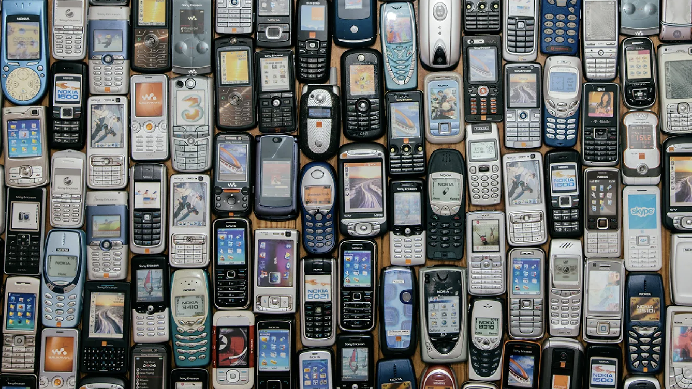

Bem-vindo ao meu blog!
Post fixado
Seja bem-vindo ao meu blog! Aqui você terá acesso a informações sobre minhas experiências e paixões, além de um conjunto de receitas deliciosas (o mousse de maracujá é o melhor, altamente recomendado).
Talvez você perceba que o site parece ter saído de uma máquina do tempo, ou cheira a algo empoeirado que dá vontade de espirrar. Sim, eu acredito que existe um encanto em interfaces singelas, céus azuis e janelas translúcidas. Mesmo que elas sejam, hoje, consideradas por muitos uma afronta à boa estética. Eu nasci no final desta era de ouro, e desfrutei dela por relativamente pouco tempo, mas mesmo assim sinto uma nostalgia pelo espírito otimista da informática dos anos 2000.
Este pequeno blog foi pensado como uma homenagem a essa época, em que sentar em frente a um computador era uma experiência mágica, um evento por si só. Era uma época em que a tecnologia parecia abrir infinitas portas, sem, ao mesmo tempo, se tornar uma tirana da vida cotidiana. Seu PC, uma coisa quadrada, feia, com um monitor de tubo, era um amigo leal, mas respeitoso. Ele estava sempre ali, te esperando ao final de um dia, para desbravarem juntos a nova fronteira digital, e, quando decidisse que tivera o suficiente, ele se recolhia, e te deixava em paz. Era uma relação inocente, de curiosidade bem dosada; uma que, olhando para trás, parece quase impossível de imaginar.
Finalizada essa introdução desnecessariamente melosa e divagante, você pode encontrar mais informações sobre este blog nos artigos abaixo. Espero que goste!
Receita de Mousse de Maracujá
Imperdível!
Com apenas uma lata de leite condensando, creme de leite, suco de maracujá concentrado e meia xícara de água, você pode criar uma sobremesa deliciosa e refrescante.
Prof. Pablo Leon Rodrigues recomenda!
Clique aqui e acesse a receita completa.
Suporte Mobile?
Vai ter que esperar...
Não, o design do blog não foi desenvolvido com dispositivos móveis em mente.
Como trabalho da primeira disciplina referente a Desenvolvimento Web, o blog foi projetado para funcionar apenas em ambientes desktop. Talvez, no futuro, quando estiver mais avançado no curso, eu possa revisitar esse blog e implementar essa nova funcionalidade.
Em seu estado atual, o site foi desenvolvido em um ambiente de desktop e testado nos browsers Brave e Chrome.

Caixa de Chat
Funciona mesmo?
Bem... Também não.
O chat é apenas simulado. Você pode escrever na caixa de texto, e clicar no botão ou pressionar enter para "enviar" uma mensagem no chat. Na realidade, não há conexão com nenhum servidor de chat, ou qualquer tipo de interlocutor.
O intuito era apenas adicionar mais um elemento interativo que ajudasse a construir uma atmosfera de blog dos anos 2000, que não raro, contavam com chats. Eram, admitidamente, chats muito diferentes do tipo de comunicação instantânea que temos hoje. Eram assíncronos, simplistas e frequentemente não possuíam "threads", ou seja, eram apenas discussões linears, linhas de comentários que estendiam-se do topo ao fim do chat sem compartimentalização. Estas limitações criavam um ambiente de comunicação mais pessoal e sem filtros, com senso de comunidade restrito.
Uso de Inteligência Artificial
Transparência não é só glassmorphism
Você pode estar se perguntando se utilizei assistência de IA para desenvolver esse blog. No caso de não estar se perguntando isso, receio que acabo de criar um problema onde não havia nenhum, mas já que trouxe o assunto, vamos lá.
A assistência de IA, nomeadamente Gemini, foi utilizada para preencher certas lacunas de conhecimento que surgiram durante o desenvolvimento quando decidi me aventurar por áreas que não domino. Para entender como usar algumas propriedades mais técnicas e "opacas" do CSS, como linear-gradient, box-shadow e flex (atalho de flex-grow, flex-shrink e flex-basis) procurei ajuda no Gemini (muitas vezes através do "AI Mode" do Google Search), como maneira, principalmente, de poupar tempo procurando por explicações em sites e fórums. Outro desafio foi a implementação do chat simulado, dos áudios que tocam ao clicar nos botões e de outras funcionalidades do JavaScript. Novamente recorri ao Gemini e para entender como implementar estas funcionalidades simples, que pensava dar um ar de maior interatividade ao site e também serviram como um bom experimento de aprendizado de modo geral.
Em nenhum momento o intuito foi deixar que a IA realizasse o trabalho para mim. Afinal, isso acabaria com o propósito de aprendizagem proposto pela atividade, que, por sinal, foi muito divertido. O que eu busquei, e acredito ter conseguido, foi usar a IA como uma ferramenta de pesquisa prática e ágil para possibilitar o aprendizado durante a atividade, sem prejuízo para o exercício das minhas habilidades individuais como desenvolvedor.